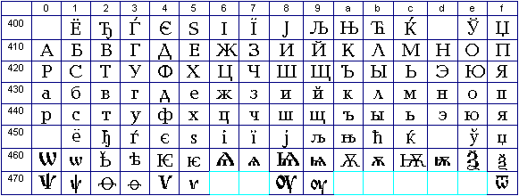
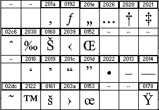

- Oficialaĵoj pri Unikodo
- La Unikoda paĝo Latina-1a
- La Unikoda paĝo Eŭrope Latina
- La Unikoda paĝo Cirila
- Kelkaj gravaj signoj tipografiaj
- Eŭropaj subsignaroj
- Testaj kodpaĝoj
Unikodaj
La supersignitaj literoj de Esperanto havas en Unikodo
la kodonojn (deksesume kaj dekume; vd ankaŭ La Unikoda paĝo Eŭrope Latina):
| Ĉ 0x108=264
| Ĝ 0x11C=284
| Ĥ 0x124=292
| Ĵ 0x134=308
| Ŝ 0x15C=348
| Ŭ 0x16C=364 |
| ĉ 0x109=265
| ĝ 0x11D=285
| ĥ 0x125=293
| ĵ 0x135=309
| ŝ 0x15D=349
| ŭ 0x16D=365
|
Kromaj referencoj lokaj
Askiaj tabeloj apartenas ankaŭ al pluraj
aliaj supersignaroj, kaj tial aperas aparte (vd Pri Askio). Krome, vd WGL4, UTF-8, Lucida Sans Unicode.
Foraj
referencoj
- The Unicode Consortium: The Unicode Standard, Version 3.0,
Addison-Wesley Developers Press, 2000, 1070 p., with CD-ROM, ISBN 0-201-61633-5.
- http://www.unicode.org/unicode/onlinedat/online.html
- Resuma tabelo da
Unikodaj kodpaĝoj (anglalingva)
- Unikodo
venas! (artikolo el la «Monato»).
- Bertilo Wennergren pri Unikodo.
Pri la difino kaj evoluigo de Unikodo zorgas neprofitcela organizaĵo
Unicode, Inc. (antaŭe The Unicode Consortium), kies fondintoj
estis la plej gravaj kompanioj kaj institucioj okupiĝantaj pri internacia
komputado: Adobe, Aldus, Borland, GO, DEC, IBM, Lotus, Metaphor, Majkrosoft, NeXT, Novell, Sun, WordPerfect. La hejmpaĝo de Unikodo estas ĉe http://www.stonehand.com/unicode.html.
La normo Unicode
3.0.
Krome, vd WG2
Documents kaj anglalingvaj klarigoj
pri ĝia uzo.
Senescepte ĉiuj Unikodaj kodonoj longas 16 bitojn, sendepende je la lingvo,
tial nenia eskapsigno aŭ stirsekvenco necesas por indiki ajnan signon el
ajna lingvo. Oni rajtas apliki ajnan metodon por paki la kodojn, sed tiuj
metodoj restos ekster Unikodo.
La Unikodajn kodonojn por la signoj de ISO-kodoj, ne indikitaj ĉi-sube, vd ĉe ftp://ftp.unicode.org/Public/MAPPINGS/ISO8859/.
La unuaj kodonoj [0..127] havas tian
saman signifon, kiel en Askio; kaj pli grandaj
kodonoj servas por prezenti la kromajn signojn de naciaj alfabetoj. Ĉiujn videblajn signojn de tiu plua parto en la Latina-1a donas la sekva tabelo:
| + | 0 | 1 | 2 | 3 | 4 | 5 | 6 | 7 | 8 | 9 | A | B | C | D | E | F |
|---|
| A0
| | ¡ | ¢
| £
| ¤ | ¥ | ¦
| §
| ¨ | © | ª | « | ¬
| | ® | ¯ |
|---|
| B0
| ° | ±
| ²
| ³
| '
| µ | ¶
| ·
| ¸ | ¹ | º | » | ¼
| ½ | ¾ | ¿ |
|---|
| C0
| À
| Á
| Â | Ã
| Ä | Å | Æ
| Ç
| È
| É
| Ê
| Ë
| Ì
| Í
| Î
| Ï |
|---|
| D0 | Ð
| Ñ
| Ò
| Ó
| Ô | Õ
| Ö
| × | Ø
| Ù
| Ú
| Û
| Ü | Ý | Þ
| ß |
|---|
| E0
| à
| á
| â | ã
| ä | å | æ
| ç
| è
| é
| ê
| ë
| ì
| í
| î
| ï |
|---|
| F0 | ð
| ñ
| ò
| ó
| ô | õ
| ö
| ÷ | ø
| ù
| ú
| û
| ü | ý | þ | ÿ
|
|---|
La nefarbita fono markas komunaĵon de la Latina-1a kaj Latina-3a. Nomoj de la signoj el la Latina-1a
En la ĉi-suba listo por ĉiu signo de la Latina-1a estas indikitaj:
- La deksesuma kodono laŭ la ISO-kodo 8859-1 (egalas la Unikodan);
- Askiigita signobildo, uzebla en retpoŝtila aŭ Postskripta surogata prezento;
- La prezento de la signo en Teĥo (aŭ
manko, se simpla prezento malestas);
- Esperantigita Unikoda nomo;
- La originala Unikoda nomo en la angla.
La signoj estas listigitaj en sia ordo laŭ la Latina-1a.
- A0 NS ~
- nerompebla spaceto
NO-BREAK SPACE - A1 !R !`
- renversita krisigno
INVERTED EXCLAMATION MARK - A2 Cd manko
- cendosigno
CENT SIGN - A3 Pd \pounds
- pundosigno
POUND SIGN - A4 MO manko
- monersigno
CURRENCY SIGN - A5 Ye manko
- enosigno
YEN SIGN - A6 BB manko
- rompita vertikala streko
BROKEN BAR - A7 SE \S
- kurba paragrafo
SECTION SIGN - A8 ': \"{}
- tremao
DIAERESIS - A9 Co \copyright
- kopirajtosigno
COPYRIGHT SIGN - AA -a $\sp a$
- adjektiva numerfinaĵo
FEMININE ORDINAL INDICATOR - AB ‹‹ manko
- duobla
malplio-citilo
LEFT-POINTING DOUBLE ANGLE QUOTATION MARK - AC NE \lnot
- logika negosigno, «fajrohoko»
NOT SIGN - AD – \-
- eventuala streketo
SOFT HYPHEN - AE Rg manko
- registritecosigno
REGISTERED SIGN - AF 'm \={}
- superstreko
MACRON - B0 0S \char23
- gradosigno
DEGREE SIGN - B1 +- \pm
- plusminuso
PLUS-MINUS SIGN - B2 2S \sp2
- supra duo
SUPERSCRIPT TWO - B3 3S \sp3
- supra trio
SUPERSCRIPT THREE - B4 ” \'
- dekstra korno
ACUTE ACCENT - B5 My \mu
- mu, mikrometro
MICRO SIGN - B6 PI \P
- rekta paragrafo, alinesigno
PILCROW SIGN - B7 .M \cdot
- meza punkto
MIDDLE DOT - B8 ', \c{}
- zoeto
CEDILLA - B9 1S \sp1
- supra unuo
SUPERSCRIPT ONE - BA -o $\sp o$
- substantiva numerfinaĵo
MASCULINE ORDINAL INDICATOR - BB >>
manko
- duobla plio-citilo
RIGHT-POINTING DOUBLE ANGLE QUOTATION MARK - BC 14 1\over4
- kvaronosigno
VULGAR FRACTION ONE QUARTER - BD 12 1\over2
- duonosigno
VULGAR FRACTION ONE HALF - BE 34 3\over4
- trikvaronosigno
VULGAR FRACTION ONE HALF - BF ?R ?`
- renversita demandosigno
INVERTED QUESTION MARK - C0 A! \`A
- latina ĉeflitero A kun
liva korno
LATIN CAPITAL LETTER A WITH GRAVE - C1 A' \'A
- latina
ĉeflitero A kun dekstra korno
LATIN CAPITAL LETTER A WITH ACUTE - C2 A> \^A
- latina
ĉeflitero A kun ĉapelo
LATIN CAPITAL LETTER A WITH CIRCUMFLEX - C3 A? \~N
- latina
ĉeflitero A kun tildo
LATIN CAPITAL LETTER A WITH TILDE - C4 A: \"A
- latina
ĉeflitero A kun tremao
LATIN CAPITAL LETTER A WITH DIAERESIS - C5 AA \AA
- latina
ĉeflitero A kun superringo
LATIN CAPITAL LETTER A WITH RING ABOVE - C6 AE \AE
- latina
ĉeflitera ligaturo AE
LATIN CAPITAL LIGATURE AE - C7 C, \c C
- latina ĉeflitero C
kun zoeto
LATIN CAPITAL LETTER C WITH CEDILLA - C8 C! \`E
- latina
ĉeflitero E kun liva korno
LATIN CAPITAL LETTER E WITH GRAVE - C9 E' \'E
- latina
ĉeflitero E kun dekstra korno
LATIN CAPITAL LETTER E WITH ACUTE - CA E> \^E
- latina
ĉeflitero E kun ĉapelo
LATIN CAPITAL LETTER E WITH CIRCUMFLEX - CB E: \"E
- latina ĉeflitero E kun tremao
LATIN CAPITAL LETTER E WITH DIAERESIS - CC I! \`I
- latina
ĉeflitero I kun liva korno
LATIN CAPITAL LETTER I WITH GRAVE - CD I' \'I
- latina
ĉeflitero I kun dekstra korno
LATIN CAPITAL LETTER I WITH ACUTE - CE I> \^I
- latina
ĉeflitero I kun ĉapelo
LATIN CAPITAL LETTER I WITH CIRCUMFLEX - CF I: \"I
- latina ĉeflitero I kun tremao
LATIN CAPITAL LETTER I WITH DIAERESIS - D0 D-
manko
- latina ĉeflitero edo
LATIN CAPITAL LETTER ETH (Icelandic) - D1 N? \~N
- latina
ĉeflitero N kun tildo
LATIN CAPITAL LETTER N WITH TILDE - D2 O! \`O
- latina
ĉeflitero O kun liva korno
LATIN CAPITAL LETTER O WITH GRAVE - D3 O' \'O
- latina
ĉeflitero O kun dekstra korno
LATIN CAPITAL LETTER O WITH ACUTE - D4 O> \^O
- latina
ĉeflitero O kun ĉapelo
LATIN CAPITAL LETTER O WITH CIRCUMFLEX - D5 O? \~O
- latina
ĉeflitero O kun tildo
LATIN CAPITAL LETTER N WITH TILDE - D6 O: \"O
- latina
ĉeflitero O kun tremao
LATIN CAPITAL LETTER O WITH DIAERESIS - D7 *X \times
- oblosigno
MULTIPLICATION SIGN - D8 O/ \O
- latina ĉeflitero O kun trastreko
LATIN CAPITAL LETTER O WITH STROKE - D9 U! \`U
- latina
ĉeflitero U kun liva korno
LATIN CAPITAL LETTER U WITH GRAVE - DA U' \'U
- latina
ĉeflitero U kun dekstra korno
LATIN CAPITAL LETTER U WITH ACUTE - DB U> \^U
- latina
ĉeflitero U kun ĉapelo
LATIN CAPITAL LETTER U WITH CIRCUMFLEX - DC U: \"U
- latina ĉeflitero U kun tremao
LATIN CAPITAL LETTER U WITH DIAERESIS - DD Y' \'Y
- latina
ĉeflitero Y kun dekstra korno
LATIN CAPITAL LETTER U WITH ACUTE - DE TH
manko
- latina ĉeflitero dorno
LATIN CAPITAL LETTER THORN (Icelandic) - DF ss \ss
- latina
etlitero sozo germana
LATIN SMALL LETTER SHARP S - E0 a! \`a
- latina etlitero A
kun liva korno
LATIN SMALL LETTER A WITH GRAVE - E1 a' \'a
- latina
etlitero A kun dekstra korno
LATIN SMALL LETTER A WITH ACUTE - E2 a> \^a
- latina
etlitero A kun ĉapelo
LATIN SMALL LETTER A WITH CIRCUMFLEX - E3 a? \~a
- latina
etlitero A kun tildo
LATIN SMALL LETTER A WITH TILDE - E4 a: \"a
- latina
etlitero A kun tremao
LATIN SMALL LETTER A WITH DIAERESIS - E5 aa \aa
- latina
etlitero A kun superringo
LATIN SMALL LETTER A WITH RING ABOVE - E6 ae \ae
- latina
etlitera ligaturo AE
LATIN CAPITAL LIGATURE AE - E7 c, {\c c}
- latina etlitero C
kun zoeto
LATIN SMALL LETTER C WITH CEDILLA - E8 e! \`e
- latina
etlitero C kun liva korno
LATIN SMALL LETTER E WITH GRAVE - E9 e' \'e
- latina
etlitero E kun dekstra korno
LATIN SMALL LETTER E WITH ACUTE - EA e> \^e
- latina
etlitero E kun ĉapelo
LATIN SMALL LETTER E WITH CIRCUMFLEX - EB e:
\"e
- latina etlitero E kun tremao
LATIN SMALL LETTER E WITH DIAERESIS - EC i! \`i
- latina
etlitero I kun liva korno
LATIN SMALL LETTER I WITH GRAVE - ED i' \'i
- latina
etlitero I kun dekstra korno
LATIN SMALL LETTER I WITH ACUTE - EE i> \^i
- latina
etlitero I kun ĉapelo
LATIN SMALL LETTER I WITH CIRCUMFLEX - EF i:
\"i
- latina etlitero I kun tremao
LATIN SMALL LETTER I WITH DIAERESIS - F0 d-
manko
- latina etlitero edo
LATIN SMALL LETTER ETH (Icelandic) - F1 n? \~n
- latina
etlitero N kun tildo
LATIN SMALL LETTER N WITH TILDE - F2 o! \`o
- latina etlitero
O kun liva korno
LATIN SMALL LETTER O WITH GRAVE - F3 o' \'o
- latina
etlitero O kun dekstra korno
LATIN SMALL LETTER O WITH ACUTE - F4 o> \^o
- latina
etlitero O kun ĉapelo
LATIN SMALL LETTER O WITH CIRCUMFLEX - F5 o? \~o
- latina
etlitero O kun tildo
LATIN SMALL LETTER O WITH TILDE - F6 o: \"o
- latina
etlitero O kun tremao
LATIN SMALL LETTER O WITH DIAERESIS - F7 :- \div
- dividsigno
DIVISION SIGN - F8 o/ \o
- latina etlitero O kun trastreko
LATIN SMALL LETTER O WITH STROKE - F9 u! \`u
- latina
etlitero U kun liva korno
LATIN SMALL LETTER U WITH GRAVE - FA u' \'u
- latina
etlitero U kun dekstra korno
LATIN SMALL LETTER U WITH ACUTE - FB u> \^u
- latina
etlitero U kun ĉapelo
LATIN SMALL LETTER U WITH CIRCUMFLEX - FC u:
\"u
- latina etlitero U kun liva korno
LATIN SMALL LETTER U WITH DIAERESIS - FD y' \'y
- latina
etlitero Y kun dekstra korno
LATIN SMALL LETTER Y WITH ACUTE - FE th manko
- latina
etlitero dorno
LATIN SMALL LETTER THORN (Icelandic) - FF y:
\"y
- latina etlitero Y kun tremao
LATIN SMALL LETTER Y WITH DIAERESIS
Tiu parto entenas ĉiujn kromleterojn de Esperanto:
| + | 0 | 1 | 2 | 3 | 4 |
5 | 6 | 7 | 8 | 9 | a | b | c | d | e | f |
|---|
| 100
| Ā
| ā
| Ă
| ă
| Ą
| ą
| Ć
| ć
| Ĉ
| ĉ
| Ċ
| ċ
| Č
| č
| Ď
| ď |
|---|
| 110
| Đ
| đ
| Ē
| ē
| Ĕ
| ĕ
| Ė
| ė
| Ę
| ę
| Ě
| ě
| Ĝ
| ĝ
| Ğ
| ğ |
|---|
| 120
| Ġ
| ġ
| Ģ
| ģ
| Ĥ
| ĥ
| Ħ
| ħ
| Ĩ
| ĩ
| Ī
| ī
| Ĭ
| ĭ
| Į
| į |
|---|
| 130
| İ
| ı
| IJ
| ij
| Ĵ
| ĵ
| Ķ
| ķ
| ĸ
| Ĺ
| ĺ
| Ļ
| ļ
| Ľ
| ľ
| Ŀ |
|---|
| 140
| ŀ
| Ł
| ł
| Ń
| ń
| Ņ
| ņ
| Ň
| ň
| ʼn
| Ŋ
| ŋ
| Ō
| ō
| Ŏ
| ŏ |
|---|
| 150
| Ő
| ő
| Œ
| œ
| Ŕ
| ŕ
| Ŗ
| ŗ
| Ř
| ř
| Ś
| ś
| Ŝ
| ŝ
| Ş
| ş |
|---|
| 160
| Š
| š
| Ţ
| ţ
| Ť
| ť
| Ŧ
| ŧ
| Ũ
| ũ
| Ū
| ū
| Ŭ
| ŭ
| Ů
| ů |
|---|
| 170
| Ű
| ű
| Ų
| ų
| Ŵ
| ŵ
| Ŷ
| ŷ
| Ÿ
| Ź
| ź
| Ż
| ż
| Ž
| ž
| ſ |
|---|
|
|
En la ĉi-suba listo por ĉiu signo estas indikitaj:
- Askiigita signobildo, uzebla en retpoŝtila aŭ Postskripta surogata prezento;
- La deksesuma kodono laŭ Unikodo;
- Esperantigita Unikoda nomo.
La signoj estas listigitaj laŭ sia ordo en Unikodo.
- A- 100
- latina ĉeflitero A kun superstreko
- a- 101
- latina
etlitero A kun superstreko
- A( 102
- latina ĉeflitero A kun
lunarko
- a( 103
- latina
etlitero A kun lunarko
- A; 104
- latina ĉeflitero A kun vosteto
- a; 105
- latina etlitero A
kun vosteto
- C' 106
- latina ĉeflitero C kun dekstra korno
- c' 107
- latina etlitero C kun dekstra korno
- C> 108
- latina ĉeflitero C kun ĉapelo
- c> 109
- latina
etlitero C kun ĉapelo
- C. 10A
- latina ĉeflitero C kun superpunkto
- c. 10B
- latina
etlitero C kun superpunkto
- C< 10C
- latina ĉeflitero C
kun dukorno
- c< 10D
- latina
etlitero C kun dukorno
- D< 10E
- latina ĉeflitero D kun
dukorno
- d< 10F
- latina etlitero D kun dukorno
- D/
110
- latina ĉeflitero D kun trastreko
- d/ 111
- latina
etlitero D kun trastreko
- E- 112
- latina ĉeflitero E kun
superstreko
- e- 113
- latina etlitero E kun superstreko
- E( 114
- latina ĉeflitero E kun lunarko
- e( 115
- latina etlitero
E kun lunarko
- E. 116
- latina ĉeflitero E kun superpunkto
- e. 117
- latina etlitero E kun superpunkto
- E;
118
- latina ĉeflitero E kun vosteto
- e; 119
- latina etlitero E kun vosteto
- E<
11A
- latina ĉeflitero E kun dukorno
- e< 11B
- latina
etlitero E kun dukorno
- G> 11C
- latina ĉeflitero G kun
ĉapelo
- g> 11D
- latina etlitero G kun ĉapelo
- G(
11E
- latina ĉeflitero G kun lunarko
- g( 11F
- latina etlitero G kun lunarko
- G. 120
- latina ĉeflitero G kun superpunkto
- g. 121
- latina etlitero G kun superpunkto
- G,
122
- latina ĉeflitero G kun subkomo
- g, 123
- latina etlitero G kun subkomo
- H>
124
- latina ĉeflitero H kun ĉapelo
- h> 125
- latina
etlitero H kun ĉapelo
- H/ 126
- latina ĉeflitero H kun trastreko
- h/ 127
- latina
etlitero H kun trastreko
- I~ 128
- latina ĉeflitero I kun tildo
- i~ 129
- latina etlitero I kun
tildo
- I- 12A
- latina ĉeflitero I kun superstreko
- i- 12B
- latina etlitero I kun superstreko
- I(
12C
- latina ĉeflitero I kun lunarko
- i( 12D
- latina etlitero i kun lunarko
- I; 12E
- latina ĉeflitero I kun vosteto
- i;
12F
- latina etlitero I kun vosteto
- I. 130
- latina
ĉeflitero I kun superpunkto
- i. 131
- latina etlitero I
senpunkta
- IJ 132
- latina ĉeflitera ligaturo IJ
- ij 133
- latina
etlitera ligaturo IJ
- J> 134
- latina ĉeflitero J kun
ĉapelo
- j> 135
- latina etlitero J kun ĉapelo
- K,
136
- latina ĉeflitero K kun subkomo
- k, 137
- latina etlitero K kun subkomo
- kk 138
- latina etlitero KRA
- L' 139
- latina ĉeflitero L kun
dekstra korno
- l' 13A
- latina etlitero L kun dekstra korno
- L, 13B
- latina ĉeflitero L kun subkomo
- l, 13C
- latina etlitero
L kun subkomo
- L< 13D
- latina ĉeflitero L kun dukorno
- l< 13E
- latina
etlitero L kun dukorno
- L. 13F
- latina ĉeflitero L kun meza
punkto
- l. 140
- latina etlitero L kun meza punkto
- L/
141
- latina ĉeflitero L kun trastreko
- l/ 142
- latina
etlitero L kun trastreko
- N' 143
- latina ĉeflitero N kun
dekstra korno
- n' 144
- latina etlitero N kun dekstra korno
- N, 145
- latina ĉeflitero N kun subkomo
- n, 146
- latina etlitero
N kun subkomo
- N< 147
- latina ĉeflitero N kun dukorno
- n< 148
- latina etlitero N kun dukorno
- 'n
149
- latina etlitero N kun antaŭa apostrofo
- NG 14A
- latina
ĉeflitero ENG (Lapona)
- ng 14B
- latina etlitero ENG
- O- 14C
- latina ĉeflitero O kun superstreko
- o- 14D
- latina
etlitero O kun superstreko
- O" 150
- latina ĉeflitero O kun
duobla dekstra korno
- o"
151
- latina etlitero O kun duobla dekstra korno
- OE
152
- latina ĉeflitera ligaturo OE
- oe 153
- latina etlitera ligaturo OE
- R' 154
- latina ĉeflitero R kun dekstra korno
- r' 155
- latina
etlitero R kun dekstra korno
- R, 156
- latina ĉeflitero R
kun subkomo
- r, 157
- latina
etlitero R kun subkomo
- R< 158
- latina ĉeflitero R kun
dukorno
- r< 159
- latina etlitero R kun dukorno
- S'
15A
- latina ĉeflitero S kun dekstra korno
- s' 15B
- latina etlitero S kun dekstra korno
- S> 15C
- latina
ĉeflitero S kun ĉapelo
- s> 15D
- latina etlitero S kun
ĉapelo
- S, 15E
- latina ĉeflitero S kun zoeto
- s, 15F
- latina etlitero S kun
zoeto
- S< 160
- latina ĉeflitero S kun dukorno
- s< 161
- latina etlitero S kun dukorno
- T,
162
- latina ĉeflitero T kun subkomo
- t, 163
- latina etlitero T kun subkomo
- T<
164
- latina ĉeflitero T kun dukorno
- t< 165
- latina
etlitero T kun dukorno
- T/ 166
- latina ĉeflitero T kun trastreko
- t/ 167
- latina
etlitero T kun trastreko
- U~ 168
- latina ĉeflitero U kun tildo
- u~ 169
- latina etlitero U kun
tildo
- U- 16A
- latina ĉeflitero U kun superstreko
- u- 16B
- latina etlitero U kun superstreko
- U(
16C
- latina ĉeflitero U kun lunarko
- u( 16D
- latina etlitero U kun lunarko
- U. 16E
- latina ĉeflitero U kun superringo
- u. 16F
- latina etlitero U kun superringo
- U"
170
- latina ĉeflitero U kun duobla dekstra korno
- u" 171
- latina etlitero U kun duobla dekstra korno
- U; 172
-
latina ĉeflitero U kun vosteto
- u;
173
- latina etlitero U kun vosteto
- W> 174
- latina
ĉeflitero W kun ĉapelo
- w> 175
- latina etlitero W kun
ĉapelo
- Y> 176
- latina ĉeflitero Y kun ĉapelo
- y> 177
- latina etlitero Y kun ĉapelo
- Y:
178
- latina ĉeflitero Y kun tremao
- Z' 179
- latina
ĉeflitero Z kun dekstra korno
- z' 17A
- latina etlitero Z
kun dekstra korno
- Z. 17B
- latina ĉeflitero Z kun
superpunkto
- z. 17C
- latina etlitero Z kun superpunkto
- Z‹ 17D
- latina ĉeflitero Z kun dukorno
- z‹
17E
- latina etlitero Z kun dukorno
- s1 17F
- latina
etlitero longa S

Rim. En la disponeblaj al mi tiparoj mankas signobildoj por
la kodonoj 16u476, 16u477 (upsilo kun duobla liva korno), 16u47A…16u47E
(diversaj formoj de omego kaj ties ligaturoj). Ili ĉiuj estas Slavonaj
literoj, ne uzataj en la modernaj alfabetoj civilaj.
En la ĉi-suba listo
por ĉiu signo estas indikitaj:
- Askiigita signobildo, uzebla en retpoŝtila aŭ Postskripta surogata prezento.
- La deksesuma kodono laŭ Unikodo.
- Esperantigita Unikoda nomo.
La signoj estas listigitaj laŭ sia ordo en Unikodo.
- IE 400
- cirila cxeflitero E kun liva korno
CYRILLIC CAPITAL LETTER IE WITH GRAVE - JO 401
- Cirila ĉeflitero E
kun tremao (rusa)
CYRILLIC CAPITAL LETTER IO - D% 402
- Cirila ĉeflitero mola Ĝ
CYRILLIC CAPITAL LETTER DJE (Serbocroatian) - G% 403
- Cirila
ĉeflitero go kun dekstra korno
CYRILLIC CAPITAL LETTER GJE - JE 404
- Cirila ĉeflitero ronda e
CYRILLIC CAPITAL LETTER UKRAINIAN IE - DS 405
- Cirila ĉeflitero dzelo
CYRILLIC CAPITAL LETTER DZE - II 406
- Cirila ĉeflitero I-deko (laŭ
la cifera valoro)
CYRILLIC CAPITAL LETTER BYELORUSSIAN-UKRAINIAN I - JI 407
- Cirila
ĉeflitero I kun tremao
CYRILLIC CAPITAL LETTER YI (Ukrainian) - J% 408
- Cirila ĉeflitero J
CYRILLIC CAPITAL LETTER JE - LJ 409
- Cirila ĉeflitera ligaturo L-jereto
CYRILLIC CAPITAL LETTER LJE - NJ 40a
- Cirila ĉeflitero ligaturo N-jereto
CYRILLIC CAPITAL LETTER NJE - Ts 40b
- Cirila ĉeflitero mola Ĉ
CYRILLIC CAPITAL LETTER TSHE (Serbocroatian) - KJ 40c
- Cirila
ĉeflitero K kun dekstra korno
CYRILLIC CAPITAL LETTER KJE - I= 40d
- Cirila cxeflitero i-oko kun
liva korno
CYRILLIC CAPITAL LETTER I WITH GRAVE - V% 40e
- Cirila ĉeflitero U
kun lunarko (bjelarusa, uzbeka)
CYRILLIC CAPITAL LETTER SHORT U (Byelorussian) - DZ 40f
- Cirila
ĉeflitero Ĝ (malmola)
CYRILLIC CAPITAL LETTER DZHE - A= 410
- Cirila ĉeflitero A
CYRILLIC CAPITAL LETTER A - B= 411
- Cirila ĉeflitero bo
CYRILLIC CAPITAL LETTER BE - V= 412
- Cirila ĉeflitero vo
CYRILLIC CAPITAL LETTER VE - G= 413
- Cirila ĉeflitero go
CYRILLIC CAPITAL LETTER GHE - D= 414
- Cirila ĉeflitero do
CYRILLIC CAPITAL LETTER DE - E= 415
- Cirila ĉeflitero E
CYRILLIC CAPITAL LETTER IE - Z% 416
- Cirila ĉeflitero ĵo
CYRILLIC CAPITAL LETTER ZHE - Z= 417
- Cirila ĉeflitero zo
CYRILLIC CAPITAL LETTER ZE - I= 418
- Cirila ĉeflitero i-oko (laŭ la
cifera valoro)
CYRILLIC CAPITAL LETTER I - J= 419
- Cirila ĉeflitero i-oko kun lunarko
CYRILLIC CAPITAL LETTER SHORT I - K= 41a
- Cirila ĉeflitero ko
CYRILLIC CAPITAL LETTER KA - L= 41b
- Cirila ĉeflitero lo
CYRILLIC CAPITAL LETTER EL - M= 41c
- Cirila ĉeflitero mo
CYRILLIC CAPITAL LETTER EM - N= 41d
- Cirila ĉeflitero no
CYRILLIC CAPITAL LETTER EN - O= 41e
- Cirila ĉeflitero O
CYRILLIC CAPITAL LETTER O - P= 41f
- Cirila ĉeflitero po
CYRILLIC CAPITAL LETTER PE - R= 420
- Cirila ĉeflitero ro
CYRILLIC CAPITAL LETTER ER - S= 421
- Cirila ĉeflitero so
CYRILLIC CAPITAL LETTER ES - T= 422
- Cirila ĉeflitero to
CYRILLIC CAPITAL LETTER TE - U= 423
- Cirila ĉeflitero u
CYRILLIC CAPITAL LETTER U - F= 424
- Cirila ĉeflitero fo
CYRILLIC CAPITAL LETTER EF - H= 425
- Cirila ĉeflitero ĥo
CYRILLIC CAPITAL LETTER HA - C= 426
- Cirila ĉeflitero co
CYRILLIC CAPITAL LETTER TSE - C% 427
- Cirila ĉeflitero ĉo
CYRILLIC CAPITAL LETTER CHE - S% 428
- Cirila ĉeflitero ŝo
CYRILLIC CAPITAL LETTER SHA - Sc 429
- Cirila ĉeflitero ŝta
CYRILLIC CAPITAL LETTER SHCHA - =« 42a
- Cirila ĉeflitero jerego
CYRILLIC CAPITAL LETTER HARD SIGN - Y= 42b
- Cirila ĉeflitera
duliteraĵo jero-I
CYRILLIC CAPITAL LETTER YERU - %» 42c
- Cirila ĉeflitero jereto
CYRILLIC CAPITAL LETTER SOFT SIGN - JE 42d
- Cirila ĉeflitero turnita e
CYRILLIC CAPITAL LETTER E - JU 42e
- Cirila ĉeflitera ligaturo IO
CYRILLIC CAPITAL LETTER YU - JA 42f
- Cirila ĉeflitero ja
CYRILLIC CAPITAL LETTER YA - a= 430
- Cirila etlitero A
CYRILLIC SMALL LETTER A - b= 431
- Cirila etlitero bo
CYRILLIC SMALL LETTER BE - v= 432
- Cirila etlitero vo
CYRILLIC SMALL LETTER VE - g= 433
- Cirila etlitero go
CYRILLIC SMALL LETTER GHE - d= 434
- Cirila etlitero do
CYRILLIC SMALL LETTER DE - e= 435
- Cirila etlitero E
CYRILLIC SMALL LETTER IE - z% 436
- Cirila etlitero ĵo
CYRILLIC SMALL LETTER ZHE - z= 437
- Cirila etlitero zo
CYRILLIC SMALL LETTER ZE - i= 438
- Cirila etlitero I-oko (laŭ la
cifera valoro)
CYRILLIC SMALL LETTER I - j= 439
- Cirila etlitero I-oko kun lunarko
CYRILLIC SMALL LETTER SHORT I - k= 43a
- Cirila etlitero ko
CYRILLIC SMALL LETTER KA - l= 43b
- Cirila etlitero lo
CYRILLIC SMALL LETTER EL - m= 43c
- Cirila etlitero mo
CYRILLIC SMALL LETTER EM - n= 43d
- Cirila etlitero no
CYRILLIC SMALL LETTER EN - o= 43e
- Cirila etlitero O
CYRILLIC SMALL LETTER O - p= 43f
- Cirila etlitero po
CYRILLIC SMALL LETTER PE - r= 440
- Cirila etlitero ro
CYRILLIC SMALL LETTER ER - s= 441
- Cirila etlitero so
CYRILLIC SMALL LETTER ES - t= 442
- Cirila etlitero to
CYRILLIC SMALL LETTER TE - u= 443
- Cirila etlitero U
CYRILLIC SMALL LETTER U - f= 444
- Cirila etlitero fo
CYRILLIC SMALL LETTER EF - h= 445
- Cirila etlitero ĥo
CYRILLIC SMALL LETTER HA - c= 446
- Cirila etlitero co
CYRILLIC SMALL LETTER TSE - c% 447
- Cirila etlitero ĉo
CYRILLIC SMALL LETTER CHE - s% 448
- Cirila etlitero ŝo
CYRILLIC SMALL LETTER SHA - sc 449
- Cirila etlitero ŝta
CYRILLIC SMALL LETTER SHCHA - sc 450
- Cirila etlitero cirila etlitero
E kun liva korno
CYRILLIC SMALL LETTER IE WITH GRAVE - =' 44a
- Cirila etlitero jerego
CYRILLIC SMALL LETTER HARD SIGN - y= 44b
- Cirila etlitera duliteraĵo jero-I
CYRILLIC SMALL LETTER YERI - %' 44c
- Cirila etlitero jereto
CYRILLIC SMALL LETTER SOFT SIGN - je 44d
- Cirila etlitero turnita E
CYRILLIC SMALL LETTER E - ju 44e
- Cirila etlitera ligaturo IO
CYRILLIC SMALL LETTER YU - ja 44f
- Cirila etlitero ja
CYRILLIC SMALL LETTER YA - jo 451
- Cirila etlitero E kun tremao (rusa)
CYRILLIC SMALL LETTER IO - d% 452
- Cirila etlitero mola Ĝ
CYRILLIC SMALL LETTER DJE (Serbocroatian) - g% 453
- Cirila etlitero
go kun dekstra korno
CYRILLIC SMALL LETTER GJE - ie 454
- Cirila etlitero ronda e
CYRILLIC SMALL LETTER UKRAINIAN IE - ds 455
- Cirila etlitero dzelo
CYRILLIC SMALL LETTER DZE - ii 456
- Cirila etlitero I-deko (laŭ la
cifera valoro)
CYRILLIC SMALL LETTER BYELORUSSIAN-UKRAINIAN I - yi 457
- Cirila
etlitero I kun tremao
CYRILLIC SMALL LETTER YI (Ukrainian) - j% 458
- Cirila etlitero J
CYRILLIC SMALL LETTER JE - lj 459
- Cirila etlitero ligaturo L-jereto
CYRILLIC SMALL LETTER LJE - nj 45a
- Cirila etlitero ligaturo N-jereto
CYRILLIC SMALL LETTER NJE - ts 45b
- Cirila etlitero mola Ĉ
CYRILLIC SMALL LETTER TSHE (Serbocroatian) - kj 45c
- Cirila etlitero
K kun dekstra korno
CYRILLIC SMALL LETTER KJE - 45d
- cirila etlitero I-oko kun liva korno
CYRILLIC SMALL LETTER I WITH GRAVE - v% 45e
- Cirila etlitero U kun lunarko
CYRILLIC SMALL LETTER SHORT U (Byelorussian) - dz 45f
- Cirila
etlitero Ĝ (malmola)
CYRILLIC SMALL LETTER DZHE - Y3 462
- Cirila ĉeflitero jato
CYRILLIC CAPITAL LETTER YAT - y3 463
- Cirila etlitero jato
CYRILLIC SMALL LETTER YAT - ?? 464
- Cirila ĉeflitera ligaturo IE
CYRILLIC CAPITAL LETTER IOTIFIED E - ?? 465
- Cirila etlitera ligaturo IE
CYRILLIC SMALL LETTER IOTIFIED E - ?? 466
- Cirila ĉeflitero juseto
CYRILLIC CAPITAL LETTER LITTLE YUS - ?? 467
- Cirila etlitero juseto
CYRILLIC SMALL LETTER LITTLE YUS - ?? 468
- Cirila ĉeflitera ligaturo
I-jusego
CYRILLIC CAPITAL LETTER IOTIFIED LITTLE YUS - ?? 469
- Cirila etlitera
ligaturo I-juseto
CYRILLIC SMALL LETTER IOTIFIED LITTLE YUS - O3 46a
- Cirila ĉeflitero
jusego
CYRILLIC CAPITAL LETTER BIG YUS - o3 46b
- Cirila etlitero jusego
CYRILLIC SMALL LETTER BIG YUS - ?? 46c
- Cirila ĉeflitera ligaturo
I-jusego
CYRILLIC CAPITAL LETTER IOTIFIED BIG YUS - ?? 46d
- Cirila etlitera
ligaturo I-jusego
CYRILLIC SMALL LETTER IOTIFIED BIG YUS - F3 46e
- Cirila ĉeflitero ksi
CYRILLIC CAPITAL LETTER KSI - f3 46f
- Cirila etlitero ksi
CYRILLIC SMALL LETTER KSI - F3 470
- Cirila ĉeflitero psi
CYRILLIC CAPITAL LETTER PSI - f3 471
- Cirila etlitero psi
CYRILLIC SMALL LETTER PSI - F3 472
- Cirila ĉeflitero teto
CYRILLIC CAPITAL LETTER FITA - f3 473
- Cirila etlitero teto
CYRILLIC SMALL LETTER FITA - V3 474
- Cirila ĉeflitero upsilo
CYRILLIC CAPITAL LETTER IZHITSA - v3 475
- Cirila etlitero upsilo
CYRILLIC SMALL LETTER IZHITSA - V3 476
- Cirila ĉeflitero upsilo kun
duobla liva korno
CYRILLIC CAPITAL LETTER IZHITSA - v3 477
- Cirila etlitero upsilo kun
duobla liva korno
CYRILLIC SMALL LETTER IZHITSA - U= 478
- Cirila ĉeflitera duliteraĵo OU
CYRILLIC CAPITAL LETTER UK DIGRAPH - u= 479
- Cirila etlitero
duliteraĵo OU
CYRILLIC SMALL LETTER UK DIGRAPH - ?? 47a
- Cirila ĉeflitero ronda omego
CYRILLIC CAPITAL LETTER ROUND OMEGA - ?? 47b
- Cirila etlitero ronda omego
CYRILLIC SMALL LETTER ROUND OMEGA - ?? 47c
- Cirila ĉeflitero omego-titlo
CYRILLIC CAPITAL LETTER OMEGA TITLO - ?? 47d
- Cirila etlitero omego-titlo
CYRILLIC SMALL LETTER OMEGA TITLO - ?? 46e
- Cirila ĉeflitera
ligaturo omego-T
CYRILLIC CAPITAL LETTER OT - ?? 46f
- Cirila etlitera ligaturo omego-T
CYRILLIC SMALL LETTER OT
En la 8-bitaj ISO-kodoj (do, ankaŭ en la Latina-1) mankas pluraj signoj necesaj por bona tipografio.
 Tial la
fabrikantoj aldonas ilin en siajn kodajn tabelojn, plej ofte en la intervalon
16u80..16u9F. La apuda bildo presentas la eksternormajn signojn el tiu
intervalo laŭ la Vindoza kodpaĝo CP 1252
(ofte misprezentata kiel «Latina-1a»). Krom la signojn interpunkciajn ĝi
inkludas kelkajn literojn. En la listo estas indikitaj:
- Deksesuma Vindoza kodono el CP 1252
- Deksesuma kodono Unikoda
- Askiigo
- Teĥa prezento (se estas)
- Vorta priskribo en Esperanto
- Vorta priskribo en la angla.
- 82 201a .9
- suba 9-citilo
SINGLE LOW-9 QUOTATION MARK - 83 0192 f2
- floren-signo
LATIN SMALL LETTER F WITH HOOK - 84 201e :9
- suba 99-citilo
DOUBLE LOW-9 QUOTATION MARK - 85 2026 .3 \dots
- tripunkto
HORIZONTAL ELLIPSIS - 86 2020 /- \dag
- ponardo
DAGGER - 87 2021 /= \ddag
- duobla ponardo
DOUBLE DAGGER - 88 02c6 \^{}
- diakrita ĉapelo
MODIFIER LETTER CIRCUMFLEX ACCENT - 89 2030 %0
- elmilsigno
PER MILLE SIGN - 8a 0160 {\v S}
- latina ĉeflitero S kun dukorno
LATIN CAPITAL LETTER S WITH CARON - 8b 2039 <1
- unuobla malplio-citilo
SINGLE LEFT-POINTING ANGLE QUOTATION MARK - 8c 0152 {\OE}
- latina
ĉeflitera ligaturo OE
LATIN CAPITAL LIGATURE OE - 91 2018 '6 `
- supra 6-citilo
LEFT SINGLE QUOTATION MARK - 92 2019 '9 '
- supra 9-citilo
RIGHT SINGLE QUOTATION MARK - 93 201c «6 ``
- supra 66-citilo
LEFT DOUBLE QUOTATION MARK - 94 201d »9 ''
- supra 99-citilo
RIGHT DOUBLE QUOTATION MARK - 95 2022 Sb $\bullet$
- bulo
BULLET - 96 2013 -N –
- ĝis-streko
EN DASH - 97 2014 -M —
- haltostreko
EM DASH - 98 02dc \~{}
- tildeto
SMALL TILDE - 99 2122 TM
- varmarka signo
TRADE MARK SIGN - 9a 0161 {\v s}
- latina etlitero S kun dukorno
LATIN SMALL LETTER S WITH CARON - 9b 203a >1
- unuobla plio-citilo
SINGLE RIGHT-POINTING ANGLE QUOTATION MARK - 9c 0153 {\oe}
- latina
etlitera ligaturo OE
LATIN SMALL LIGATURE OE - 9f 0178 \"Y
- latina ĉeflitero Y kun tremao
LATIN CAPITAL LETTER Y WITH DIAERESIS
Realigo de la plena Unikoda normo, entenanta pli ol 30 mil signojn, rimedojn
por la dedekstra skribo ktp prezentas seriozajn teĥnikajn problemojn. Tamen
iom post iom oni komencas solvi ilin. Por la bezonoj de la Eŭropa
Komunumo la normo ENV 1973:1995 difinas du grandajn subsignarojn de
Unikodo, kiuj kontentigas la bezonojn de ĉiuj Eŭropaj lingvoj kaj interalie
entenas ĉiujn literojn de
Esperanto:
- MES
- Minimuma Eŭropa Subsignaro
(angle Minimum European Subset) havas nur 926 signojn, kio ebligas
malmultekostan realigon, sufiĉan por la pliopo da eŭropanoj. Detalojn vd en
http://www.mi.uni-koeln.de/c/mirror/www.kostis.net/charsets/iso10646.mes.html.
- EES
- Etendita Eŭropa Subsignaro (angle Extended European
Subset) havas ĉiujn signojn, uzatajn en la Eŭropaj skriboj kaj relative
kompletan sortimenton da signoj uzataj en tekstoj sciencaj, teĥnikaj kaj
komercaj.
Por plia konfuzo, nun ekzistas serio de Multilingual
European Subsets de CEN (Comité européen de normalisation):
MES–1, MES–2, MES–3A, MES–3B: http://www.evertype.com/standards/iso10646/pdf/cwa13873.pdf.